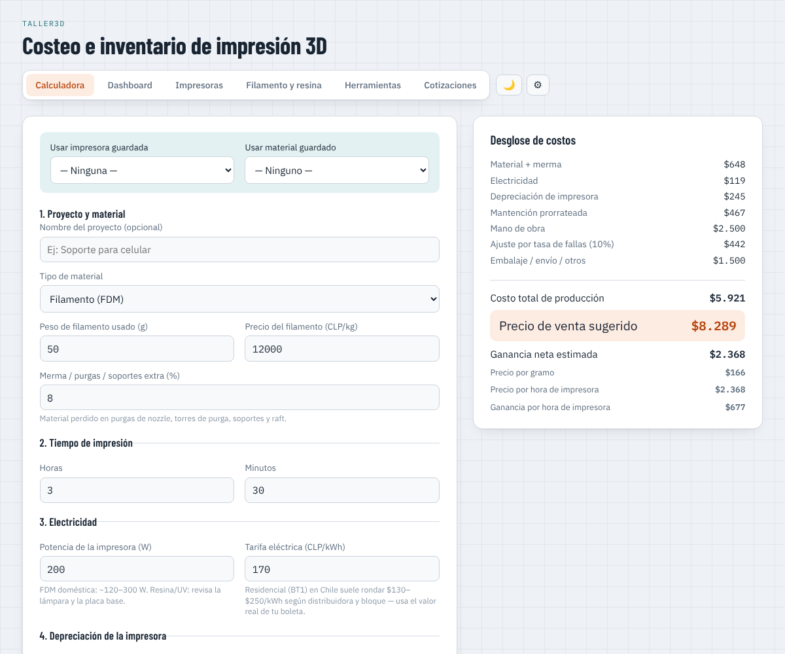
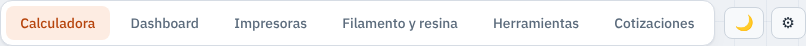
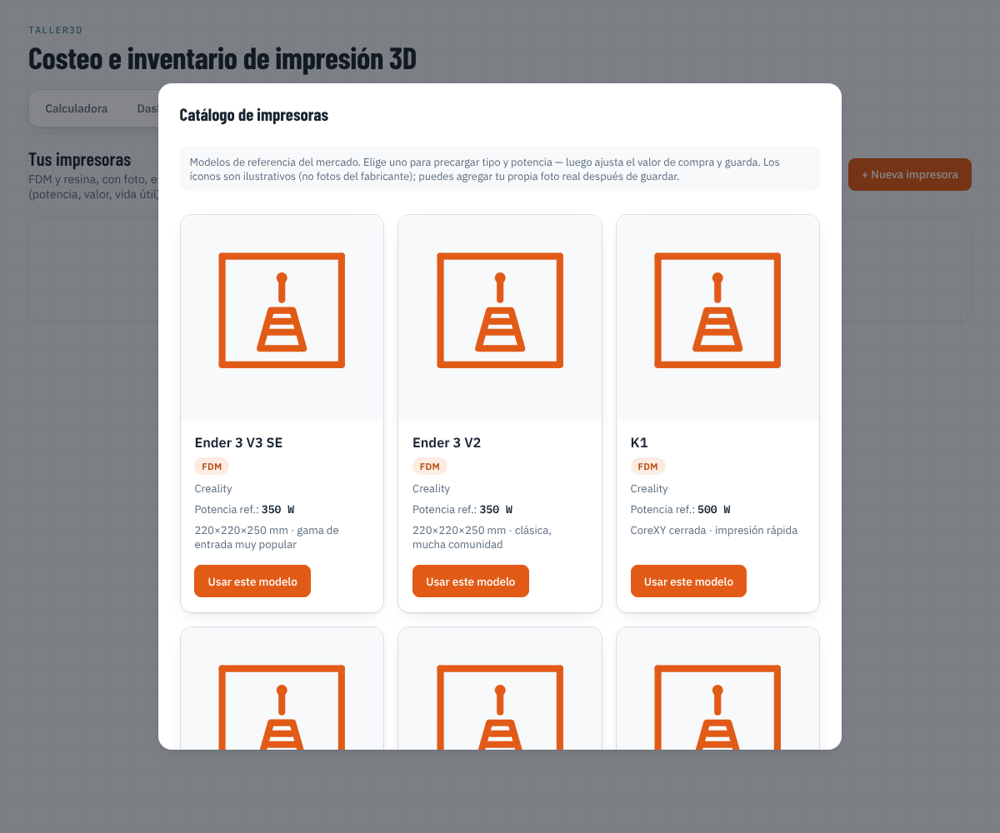
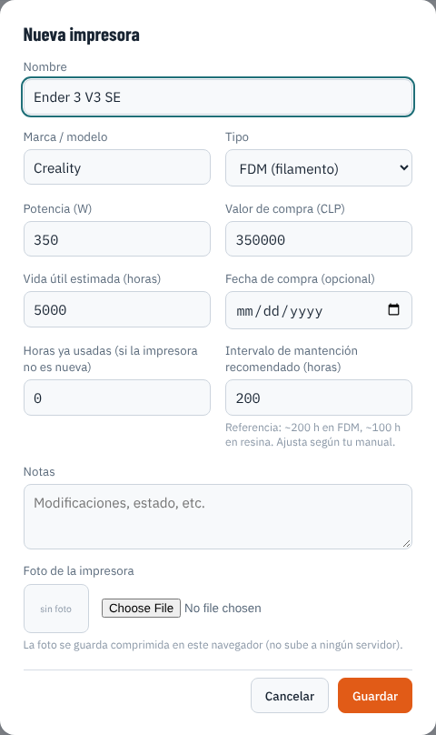
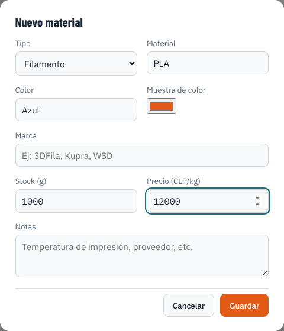
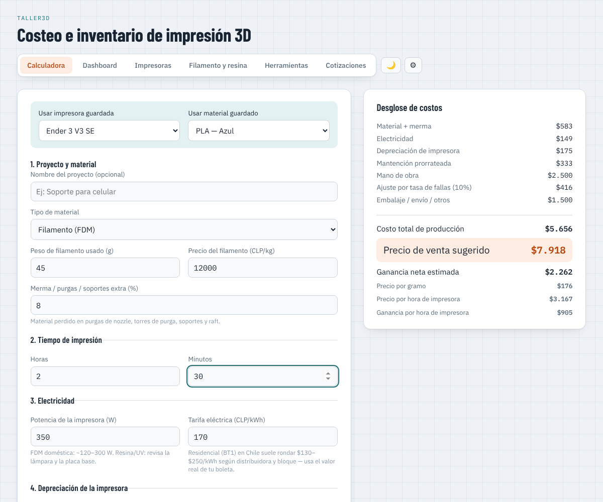
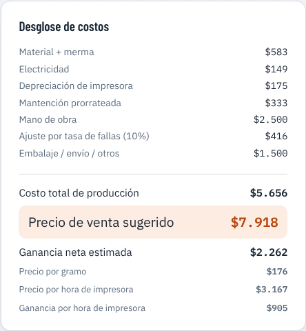
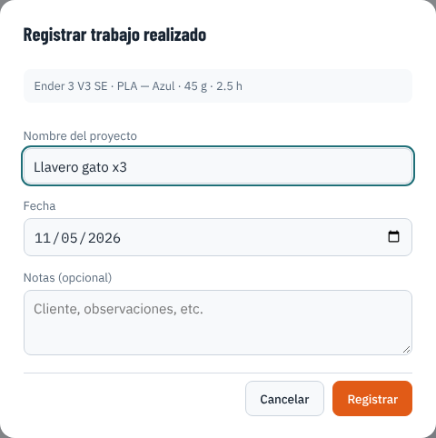
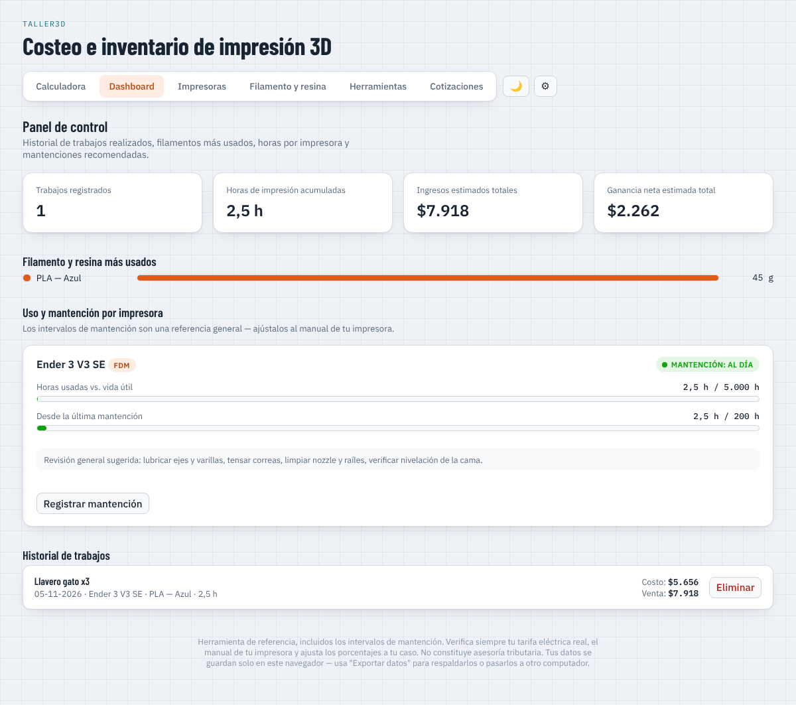
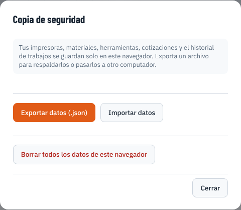

Esta guía te muestra, con capturas reales de la app, cómo calcular cuánto cobrar por una pieza impresa en 3D y cómo llevar el control de tus impresoras y materiales. No necesitas saber nada de computación — solo sigue los pasos en orden.
Taller3D es como una calculadora especial para quienes imprimen en 3D. Te dice cuánto te cuesta hacer una pieza y cuánto deberías cobrar por ella. También guarda tus impresoras, tus filamentos y lo que vas imprimiendo, para que no se te olvide nada.

Arriba de todo hay seis botones. Cada uno te lleva a una parte distinta de la app:

Ve a la pestaña Impresoras y presiona "Elegir del catálogo". Vas a ver fotos de impresoras conocidas — busca la tuya (o una parecida) y tócala.

¿No encuentras tu modelo exacto? Elige el más parecido no más — después puedes cambiar cualquier dato a mano.
Al elegir tu impresora, varios datos se llenan solos. Tú solo escribe cuánto pagaste por ella y presiona Guardar. Si quieres, puedes subirle una foto real tuya.

Ve a Filamento y resina y presiona "+ Nuevo material". Escribe el tipo (por ejemplo PLA), el color, y cuánto cuesta el kilo. Así la app sabe cuánto gastas en material.

Vuelve a Calculadora. Arriba, elige la impresora y el material que vas a usar — se llenan varios campos solos. Después escribe cuántos gramos de filamento gastaste y cuánto tiempo se demoró la impresión.

A la derecha aparece el resultado: cuánto te costó hacer la pieza, y el precio sugerido para venderla con ganancia. También te dice cuánto ganas por cada hora que trabaja tu impresora.

Si esa impresión fue real (no solo un cálculo), presiona "Registrar trabajo realizado". Ponle un nombre y listo: se descuenta el material gastado y se suman las horas a tu impresora, automáticamente.

En Dashboard ves un resumen de todo: cuánto has ganado, qué filamento usas más, y si alguna impresora ya necesita mantención (te lo muestra con un color: verde está bien, amarillo "pronto", rojo "atrasada").

Todo lo que guardas queda en este mismo computador. Para no perderlo nunca, presiona el botón ⚙ (arriba a la derecha) y luego "Exportar datos" de vez en cuando — se descarga un archivo que puedes guardar o llevar a otro computador.
